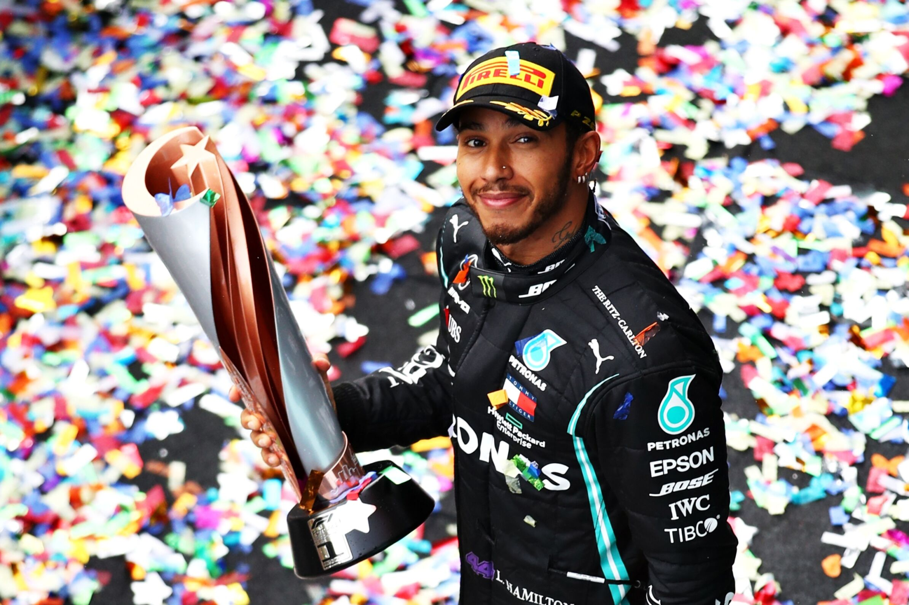
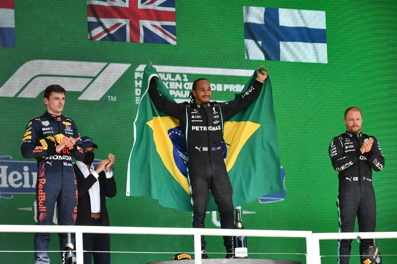
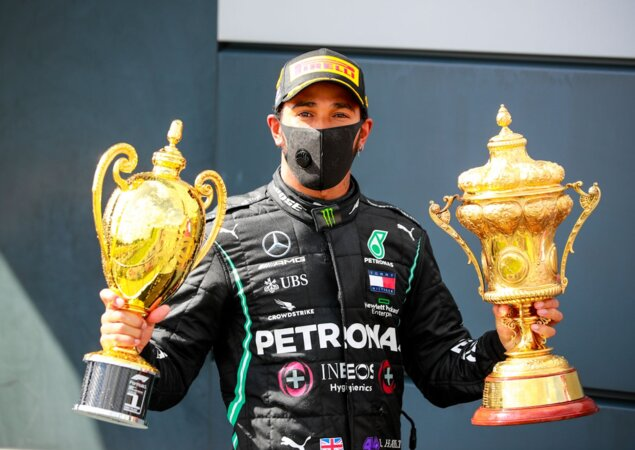
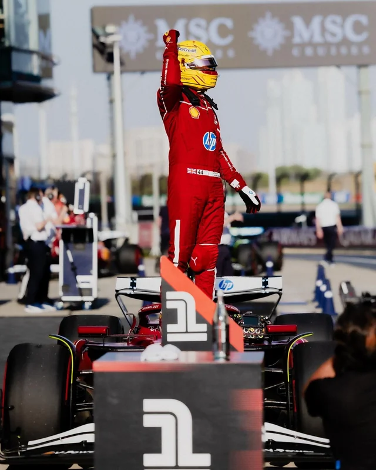
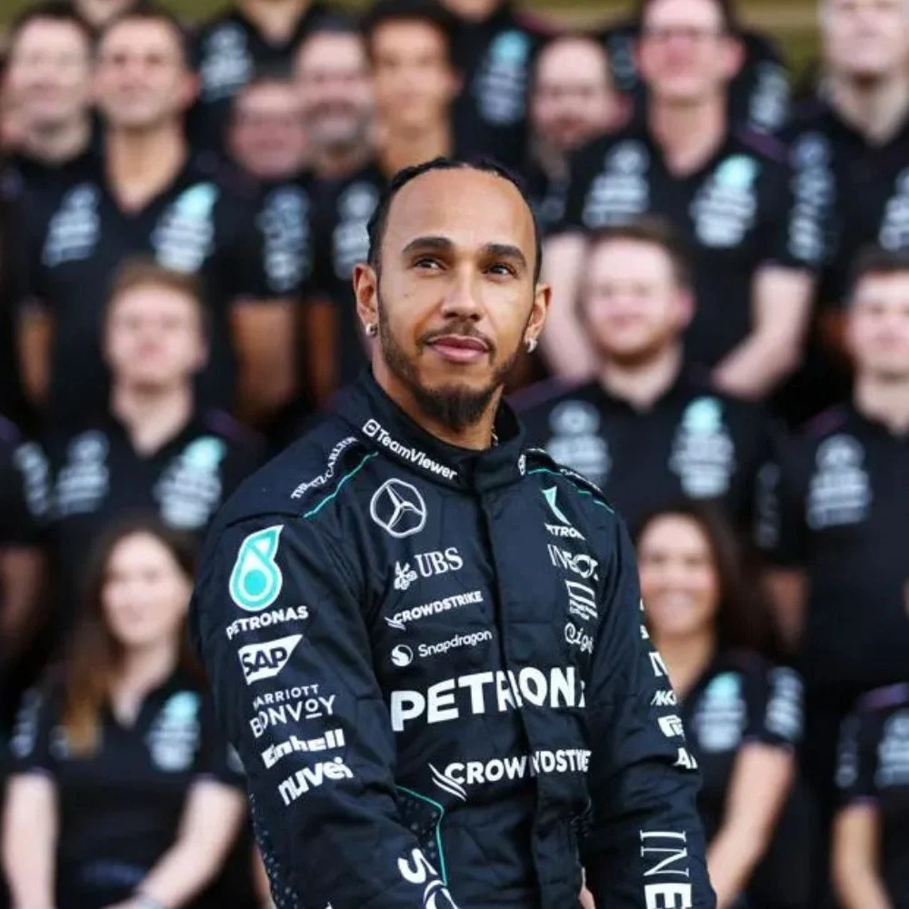
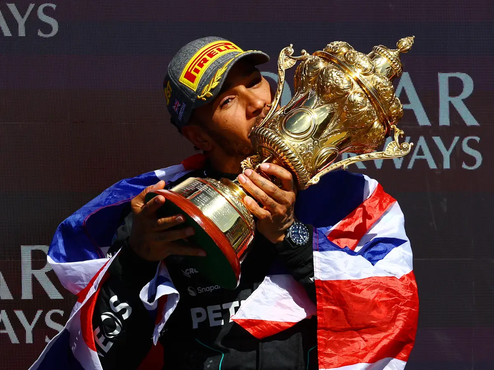
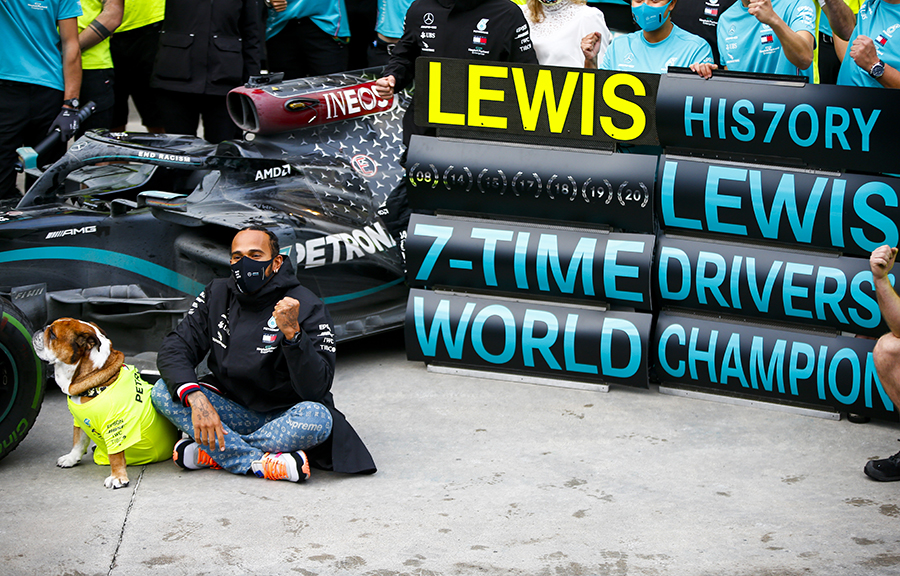

Pódios, vitórias, poles... Relembre os recordes de Hamilton ao longo de sua carreira na F1
Lewis Hamilton é um verdadeiro recordista da Fórmula 1. Ao longo de sua carreira, tanto pela McLaren quanto pela Mercedes, o heptacampeão quebrou inúmeras marcas e se consolidou como um dos maiores nomes do esporte. Com sua estreia pela Ferrari se aproximando, o Motorsport.com reuniu algumas das principais conquistas do piloto
202 pódios

Lewis Hamilton quebrou o recorde de maior número de pódios na carreira durante o GP da Espanha de 2020 — uma corrida em que liderou de ponta a ponta até a vitória. Naquela ocasião, o britânico chegou ao seu 156º pódio, superando a antiga marca de Michael Schumacher.
Desde então, Hamilton continuou ampliando sua coleção de troféus e atingiu a impressionante marca de 200 pódios no GP da Hungria de 2024. No caminho até esse feito, o heptacampeão venceu o GP da Bélgica e conquistou o segundo lugar no GP de Las Vegas, entre outros resultados expressivos.
Entre os feitos registrados ao longo desses 200 pódios, destacam-se:
Mais vitórias por uma única equipe

Lewis Hamilton chegou à Mercedes em 2013 e, desde então, acumulou 84 vitórias pela equipe — marca que já supera o antigo recorde de 72 triunfos de Michael Schumacher pela Ferrari.
O britânico quebrou esse recorde histórico no GP da Turquia de 2020, o mesmo palco onde também conquistou seu sétimo título mundial.
No total, Hamilton soma 105 vitórias na Fórmula 1: 84 com a Mercedes e 21 com a McLaren, desde sua estreia na categoria.
Pole positions e voltas mais rápidas

A principal disputa estatística da Fórmula 1 é protagonizada por Lewis Hamilton e Michael Schumacher, os únicos pilotos a conquistarem sete títulos mundiais. Por isso, eles dividem o topo de diversas listas históricas da categoria.
Hamilton atualmente detém o recorde de pole positions por uma mesma equipe, com 78 poles pela Mercedes — superando Schumacher, que conquistou 58 pela Ferrari. No total, o britânico soma 104 pole positions em sua carreira.
O heptacampeão também lidera no número de voltas mais rápidas, com 55 ao longo da carreira, enquanto Schumacher aparece logo atrás, com 53.
Mais corridas pela mesma equipe

Em 2024, Lewis Hamilton completou sua 12ª temporada consecutiva pela Mercedes, somando 245 corridas disputadas pela equipe — um recorde absoluto que o coloca com folga no topo dessa estatística.
O mais próximo desse feito é Max Verstappen, que aparece como vice-líder, com 185 corridas em nove temporadas pela Red Bull.
Longevidade

Ao vencer o GP da Grã-Bretanha de 2024, Lewis Hamilton atingiu mais um feito histórico: tornou-se o primeiro piloto a vencer uma corrida após disputar 300 GPs. Na ocasião, ele tinha 39 anos e 182 dias.
Poucas semanas depois, Hamilton quebrou o próprio recorde ao herdar a vitória de George Russell no GP da Bélgica, atualizando a marca para 39 anos e 203 dias.
Apesar disso, o recorde de piloto mais velho a vencer uma corrida ainda pertence a Luigi Fagioli, que triunfou no GP da França de 1951, aos 53 anos.
Mais vitórias em casa

Hamilton também é recordista absoluto de vitórias em casa, com nove triunfos em Silverstone ao longo da carreira — oito deles conquistados com a Mercedes. Nenhum outro piloto na história chegou perto de igualar esse desempenho no próprio país.
Títulos

Atualmente, Lewis Hamilton divide o posto de maior campeão da Fórmula 1, com sete títulos mundiais, ao lado de Michael Schumacher. No entanto, o britânico quebrou um recorde ao conquistar seis desses títulos com a Mercedes, entre 2014 e 2020 — uma sequência dominante que só foi interrompida em 2016, quando Nico Rosberg levou o título pela equipe alemã.
Já Schumacher venceu quatro campeonatos consecutivos com a Ferrari, entre 2000 e 2004. Esse feito, até então único, passou a ser dividido com Max Verstappen, que conquistou quatro títulos seguidos entre 2021 e 2024 pela Red Bull.
Postagem mais curtida sobre F1
A primeira foto de Hamilton como piloto da Ferrari quebrou mais um recorde — desta vez, nas redes sociais: tornou-se a postagem mais curtida sobre Fórmula 1 no Instagram.
O clique, feito em Maranello, mostra o piloto vestindo um sobretudo ao lado de uma Ferrari F40, celebrando oficialmente sua chegada à equipe em 2025. Em apenas 24 horas, a publicação alcançou 4,8 milhões de curtidas, superando em 200 mil o post de Charles Leclerc comemorando sua vitória no GP de Monza.
Atualmente, a imagem acumula impressionantes 5,6 milhões de curtidas.